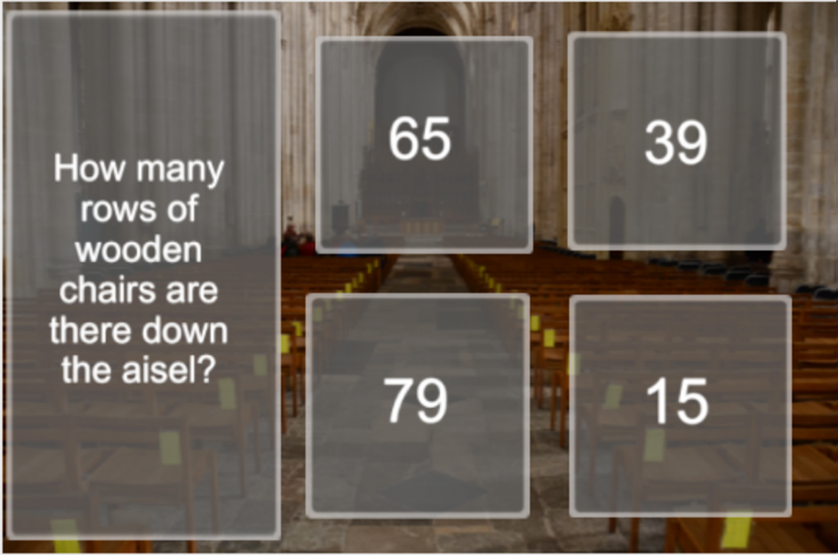
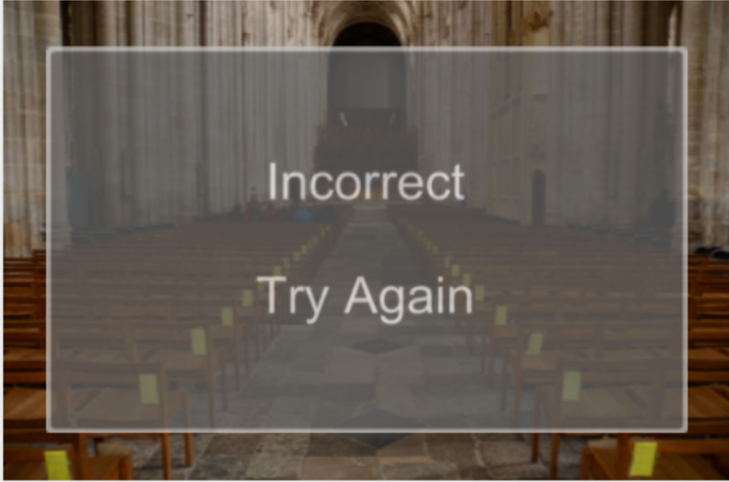
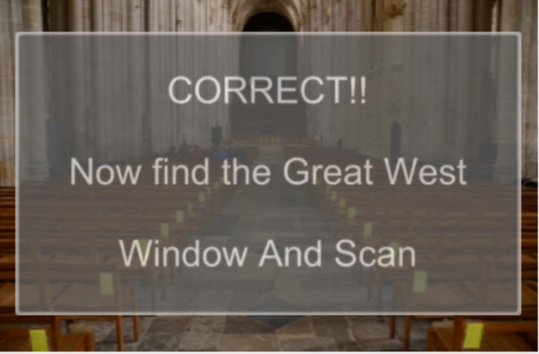

We were set the task to create an interactive project for the Cathedral in Winchester, Our target audience was school children.

Our idea was to create an Augmented Quiz around the Cathedral. We decided to do this because, we felt that it would engage the young school children with the Cathedral. With short attention spans including a piece of tech in which they could use their own nmobile devices to scan certain parts of the cathedral. They would hopefully learn more.
This was a simple Prototype we made using blippar, in this image you see how we would show the questions with a few answers.
The idea was, you would start at a base point, by scanning an image using your mobile device's camera it would show a question and a clue where to find the answer. Once you have found the answer you will need to scan the information and it would give you another question and a clue to where you can find the answer. This would go on until they have finished the quiz.
If they answered the question incorrectly, they would see this screen.
If they got the answer correct, they would see this screen.